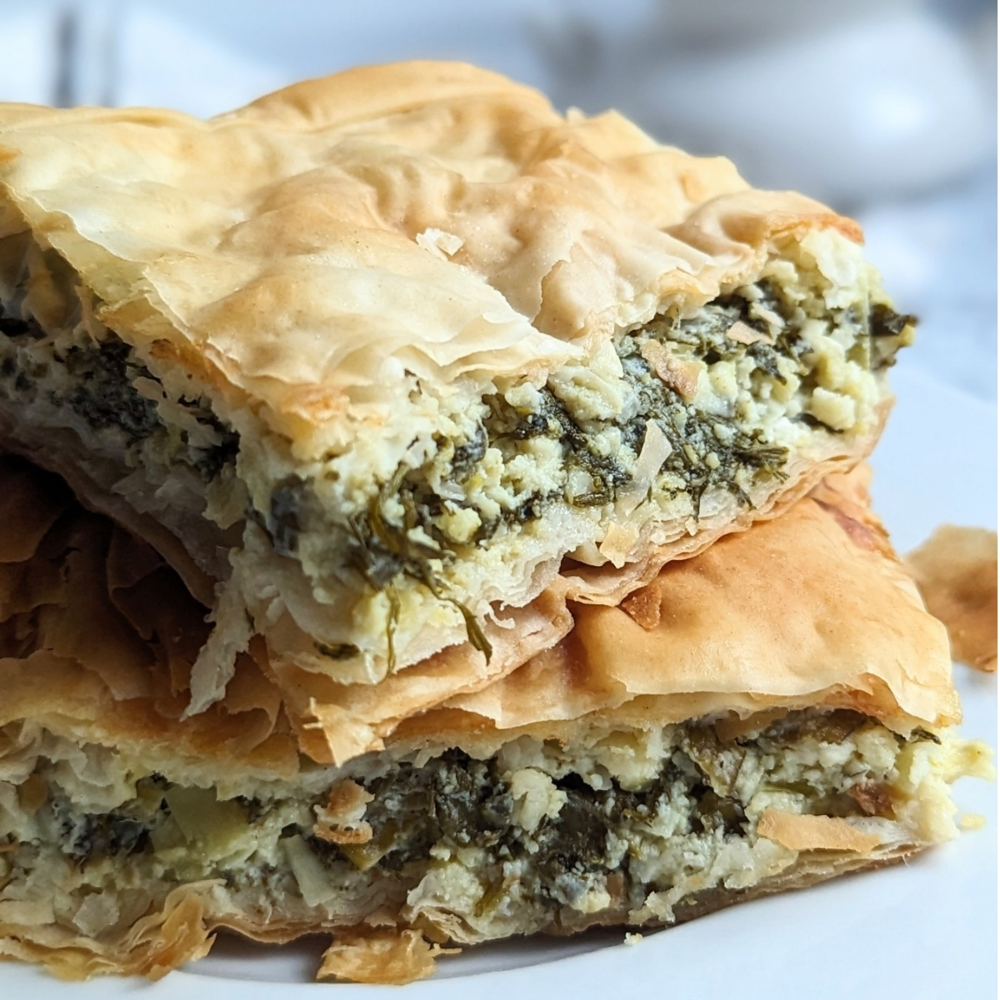

HistorySpanokopita can be traced from ancient Greece. It is believed to have been invented during the Bryzantine Empire, where it was known as "spanakotyropita." The word "spanaki" means spinach in Greek, while "tyropita" means cheese pie. Through generations the name evolved into spanokopita. Spanokopita is spinach pie with the most important parts of the recipe being spinach, philo dough, and feta cheese. | Ingredients
|
Directions
- Preheat oven to 450 degrees
- Combine the chopped spinach, dill, scallions, ricotta, and feta cheese in a large bowl and using your very clean hands, mix very well. Knead it, crush it and keep mixing until everything is combined well
- Taste the mixture and add as much salt and pepper as you like.
- Add the beaten eggs and about 1 cup of olive oil and mix well.
- Rub some oil with your hands all over a half sheet baking pan.
- Lay 3 sheets on the bottom of pan and drizzle with a little olive oil.
- Place 2 sheets half in the pan and half hanging outside of the pan on all four sides of the pan(see the video below.)
- Spread all of the filling inside of the phyllo sheets. All of the sheets that are hanging outside of the pan should go over the filling(see video.)
- Drizzle some olive oil all over the phyllo. Cover half of the pie with 2 sheets of phyllo, tucking them under and repeat the same with the other side of the pie.
- Take the remaining phyllo sheets one at a time and crumble them in rows on top of the pie. Drizzling all the remaining olive oil on top of them. This will create a crisp, light crust.
- Using a very sharp knife cut the pie into 12 equal slices.
- Place in oven and immediately reduce the temperature to 350 degrees. Bake for 1 hour. The pie will be crisp and golden brown.
- Allow to rest at room temperature for at least 20 minutes before serving. This will allow the filling to set. Serve!

Reference Lists
History SourceRecipe Source 